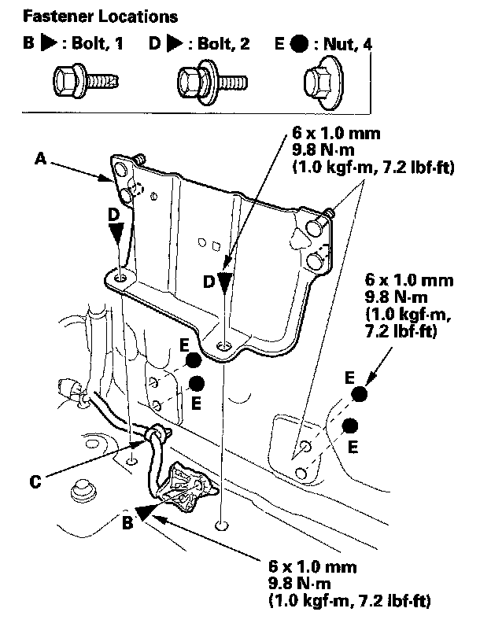

Rear Wheelhouse Gusset
Rear Wheelhouse Gusset ReplacementNOTE:
- Put on gloves to protect your hands.
- Take care not to scratch the body and related parts.
1. Remove these items:
- Rear side trim panel
- Third row seat
2. Pull the carpet back as needed.

3. Remove the rear wheelhouse gusset (A).
1. Remove the ground bolt (B) and release the harness clip (C).
2. Remove the bolts (D).
3. From outside the vehicle, remove the nuts (E).
4. Install the gusset in the reverse order of removal.